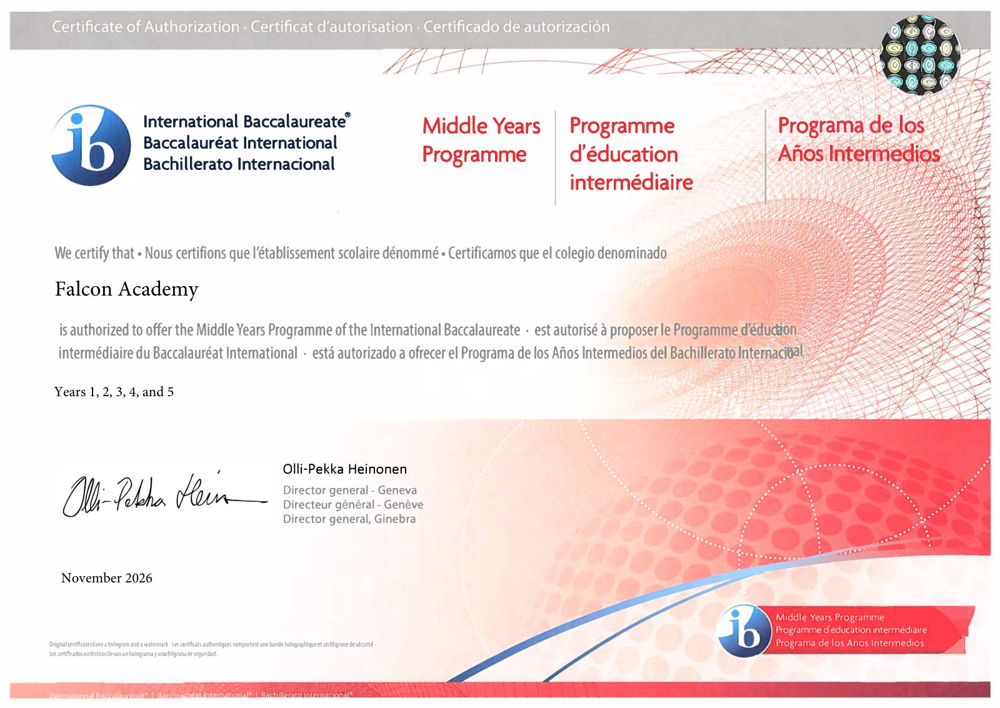

Consultation
An IB educator is assigned as the school's consultant. Teachers complete IB training and the school builds IB-aligned policies and curricula.
Independent organizations check our programs, our teaching and our school. Here is where each one stands today, and what it means for your child.
Falcon offers two IB programmes. The Middle Years Programme is authorized, and the Primary Years Programme is in candidacy.

In November 2026, the IB authorized Falcon Academy to offer the Middle Years Programme, Years 1 to 5. This is our Certificate of Authorization.
Falcon is an official IB Candidate School for the PYP. Our teachers already teach with the IB framework while the IB reviews the school step by step.
Candidacy does not guarantee authorization. The full IB statement is at the end of this section.
The MYP has completed all four stages. The PYP is still in candidacy.
An IB educator is assigned as the school's consultant. Teachers complete IB training and the school builds IB-aligned policies and curricula.
After at least one academic year of trial implementation, the school formally applies to become an IB World School.
An IB team visits the school to see the programme in action and check that every requirement is met.
The IB reviews the visit findings and decides whether the school becomes an authorized IB World School.
Children learn by asking questions, investigating and explaining what they found, so knowledge sticks and thinking skills grow with it.
Students connect what they learn to the wider world and act on it through service, in a school guided by Islamic values.
Falcon Academy is an IB World School for the Middle Years Programme and a Candidate School* for the Primary Years Programme. The school is pursuing IB authorization for the Primary Years Programme. IB World Schools share a common philosophy—a commitment to high quality, challenging, international education that Falcon Academy believes is important for our students.
*Only schools authorized by the IB Organization can offer any of its four academic programmes: the Primary Years Programme (PYP), the Middle Years Programme (MYP), the Diploma Programme, or the Career-related Programme (CP). Candidate status gives no guarantee that authorization will be granted. For further information about the IB and its programmes, visit www.ibo.org.
A whole-school review of how Falcon is led, how it teaches and how it runs.
Falcon Academy is a Candidate for Accreditation with Cognia. Cognia brings together three regional accrediting commissions: NCA CASI, NWAC and SACS CASI. Its review looks at the whole school, not a single test, and asks how well every part works together for students.
What Cognia evaluates
School leadership
Quality of teaching
How the school runs
Where Falcon stands
Candidate for accreditation
Falcon applied and was accepted as a candidate school.
Accreditation visit · September 2026
The Cognia team visited classrooms and met leaders, teachers and families.
Accreditation decision
What the SAT, PSAT and AP mean for Falcon students.
On July 20, 2026, the College Board approved Falcon Academy for both Level I and Level II school codes.
Falcon receives students' SAT, PSAT and AP score reports, and can host SAT Weekend testing.
Falcon can order and give exams at school: SAT School Day, PSAT/NMSQT, PSAT 10, PSAT 8/9 and AP exams.
College credit while still in high school.
Falcon's dual-enrollment partnership with Northern Virginia Community College (NOVA) lets high school students take college courses and earn college credit before they graduate.
Accreditation checks the school every few years. These are the things we do in between.
3 × a year
MAP testing
Tracks each child's growth against national benchmarks, so teachers can adjust instruction.
10 : 1
Student–teacher ratio
Small classes, so every teacher knows each child's progress.
55%+
Hold a master's degree
Of our educators, across both campuses.
95%
IB-trained teachers
About accreditation, curriculum and progress.
Falcon Academy is an IB World School for the Middle Years Programme (MYP), an IB Candidate School for the Primary Years Programme (PYP), and a Candidate for Accreditation with Cognia. We are actively committed to meeting and maintaining these high global educational standards.
An inquiry-based curriculum following the IB Primary Years Programme (PYP) and Middle Years Programme (MYP).
All our teachers are highly qualified; 95% are IB-trained, and over 55% hold a master’s degree.
We utilize MAP (Measures of Academic Progress) testing three times a year. This allows us to track individual growth, compare students against national benchmarks, and adjust instruction to meet specific needs.
The IB framework is globally recognized for its rigor. It develops high-level critical thinking, research, and writing skills that often allow students to earn college credits early and gain admission to top-tier universities worldwide.
Tours run Sundays at Ashburn and Saturdays at Chantilly, 2–4 PM. Questions about accreditation? Ask us.